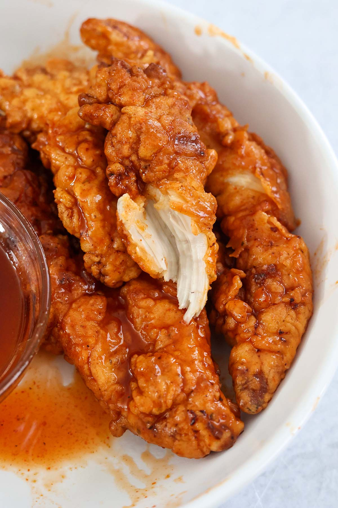

Hot Honey Chicken Tenders

Description
If you love finger food, then these hot honey chicken fingers are for you.
Ingredients
- 1lb chicken tenderloins with the white tendon removed
- 2 cups of buttermilk
- 1 1/2 cups all-purpose flour
- 1/2 cup cornstarch
- 2 tsp garlic powder
- 1 tsp onion powder
- 1 tsp paprika
- 1 tsp oregano
- 1 1/2 tsp salt(or to taste)
- 1/4 tsp black pepper(or again.. to taste)
- 1/2 cup of hot sauce
- 1/2 cup honey
- oil, for frying
Instructions
-
In a small bowl, combine the salt, pepper, paprika, oregano, garlic powder, and onion powder.
-
Add the chicken tenderloins, 1/2 of the spice blend, and buttermilk to a bowl,
and let it sit for 20 minutes at room temperature.
-
Place the flour, cornstarch,
and remaining spices in a large brown paper bag or zippered plastic bag. Mix well.
-
Dip the chicken tenders in the flour mixture shaking off any excess buttermilk before coating. Make sure to coat the chicken tenders well.
You shouldn't be able to see the flesh under the flour. Coat twice if needed.
-
Heat the oil to 350 degrees F. and fry the chicken tenders for 3 minutes on each side or until fully cooked through.
Place the chicken tenders on a wire rack or a paper towel-lined plate.
-
While the chicken cooks,
add the hot sauce and honey to a saucepan and cook for 2-3 minutes.
Whisk the sauce until nice and smooth.
-
Coat the chicken tenders with the hot honey sauce and enjoy!